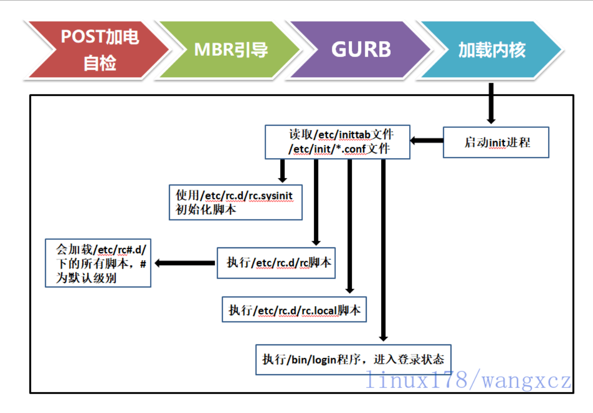
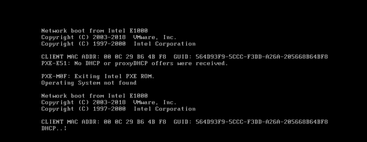
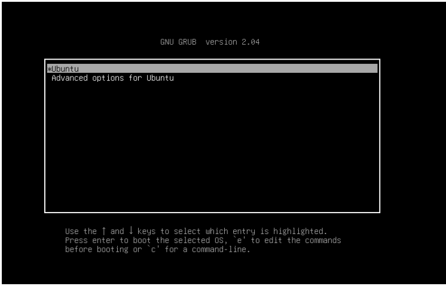
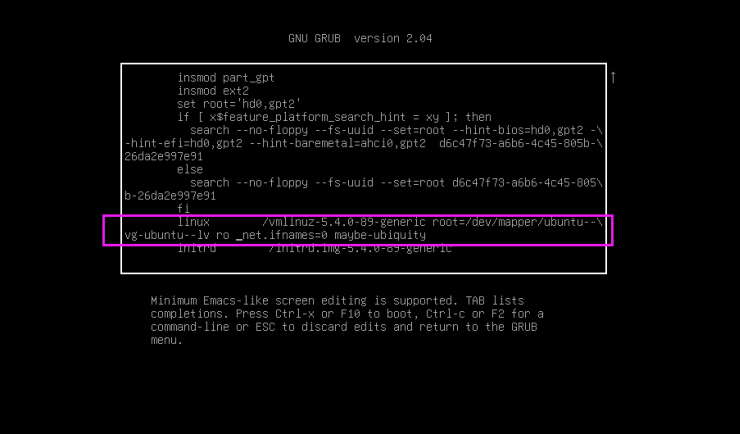
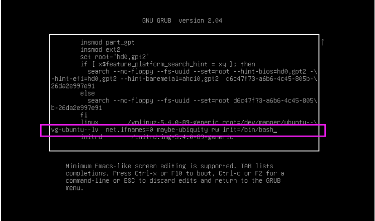
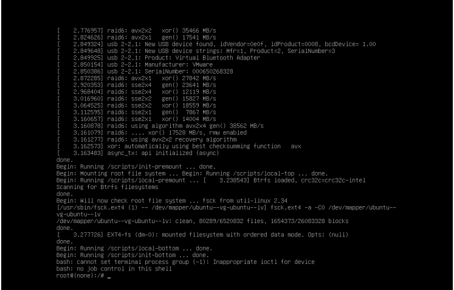
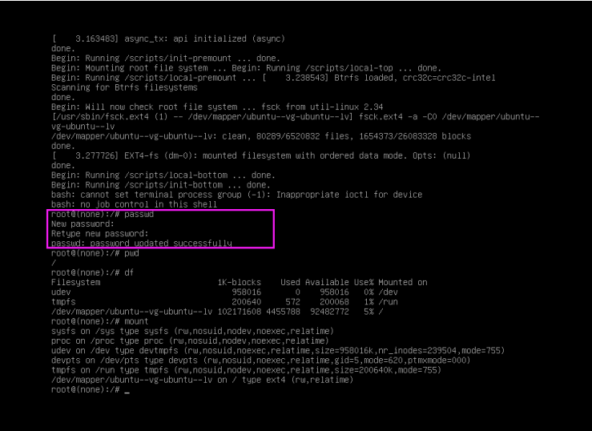
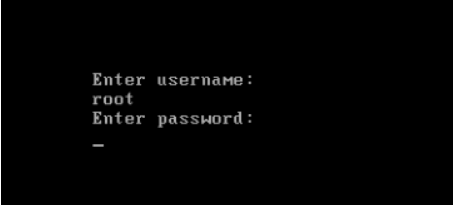
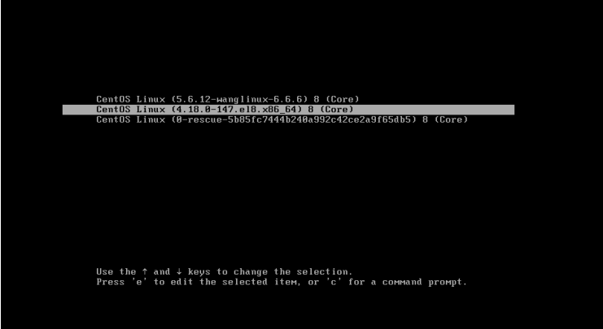
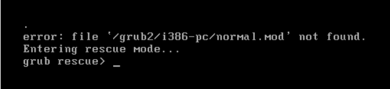

CentOS 6启动管理 CentOS 6 启动流程

加载BIOS的硬件信息，获取第一个启动设备
读取第一个启动设备MBR的引导加载程序(grub)的启动信息
加载核心操作系统的核心信息，核心开始解压缩，并尝试驱动所有的硬件设备
核心执行init程序，并获取默认的运行信息
init程序执行/etc/rc.d/rc.sysinit文件，重新挂载根文件系统
启动核心的外挂模块
init执行运行的各个批处理文件(scripts)
init执行/etc/rc.d/rc.local
执行/bin/login程序，等待用户登录
登录之后开始以Shell控制主机
硬件启动POST POST：Power-On-Self-Test，加电自检，是BIOS功能的一个主要部分。负责完成对CPU、主板、内存、硬盘子系统、显示子系统、串并行接口、键盘等硬件情况的检测
主板的ROM：BIOS，Basic Input and Output System，保存着有关计算机系统最重要的基本输入输出程序，系统信息设置、开机加电自检程序和系统启动自举程序等
主板的RAM：CMOS互补金属氧化物半导体，保存各项参数的设定，按次序查找引导设备，第一个有引导程序的设备为本次启动设备
启动加载器 bootloader grub 功能和组成 bootloader: 引导加载器，引导程序
Windows: ntloader，仅是启动OS
Linux：功能丰富，提供菜单，允许用户选择要启动系统或不同的内核版本；把用户选定的内核装载到内存中的特定空间中，解压、展开，并把系统控制权移交给内核
Linux的bootloader
LILO：LInux LOader，早期的bootloader，功能单一
GRUB: GRand Unified Bootloader, CentOS 5,6 GRUB 0.97: GRUB Legacy， CentOS 7 以后使用GRUB 2.02
GRUB 启动阶段
CentOS 6 grub 安装 安装 grub的两种方法：
(1) grub-install 安装grub stage1和stage1_5到/dev/DISK磁盘上，并复制GRUB相关文件到 DIR/boot目录下
1 grub-install --root-directory=DIR /dev/DISK
(2) grub命令
1 2 3 grub> root (hd grub> setup (hd
范例: 利用grub命令修复grub
1 2 3 4 5 6 7 8 9 10 11 12 13 14 15 16 17 18 19 20 21 22 23 24 25 26 27 [root@centos6 ~] 446+0 records in 446+0 records out 446 bytes (446 B) copied, 0.00070171 s, 636 kB/s [root@centos6 ~] Probing devices to guess BIOS drives. This may take a long time. GNU GRUB version 0.97 (640K lower / 3072K upper memory) [ Minimal BASH-like line editing is supported. For the first word, TAB lists possible command completions. Anywhere else TAB lists the possible completions of a device/filename.] grub> root (hd0,0) root (hd0,0) Filesystem type is ext2fs, partition type 0x83 grub> setup (hd0) setup (hd0) Checking if "/boot/grub/stage1" exists... no Checking if "/grub/stage1" exists... yes Checking if "/grub/stage2" exists... yes Checking if "/grub/e2fs_stage1_5" exists... yes Running "embed /grub/e2fs_stage1_5 (hd0)" ... 27 sectors are embedded. succeeded Running "install /grub/stage1 (hd0) (hd0)1+27 p (hd0,0)/grub/stage2 /grub/grub.conf" ... succeededDone. grub> quit [root@centos6 ~]
范例：grub的第1阶段故障无法启动,进行修复
1 2 3 4 5 6 7 8 9 10 11 12 13 14 15 16 17 18 19 20 21 22 23 24 25 26 27 28 29 30 31 32 33 34 35 36 37 38 39 40 41 42 43 44 45 46 47 48 49 50 51 52 53 54 55 56 57 58 59 60 61 62 63 64 65 66 67 68 69 70 71 72 73 74 75 76 77 78 79 80 81 82 83 84 85 86 87 88 89 [root@centos6 grub] 00000000 eb 48 90 10 8e d0 bc 00 b0 b8 00 00 8e d8 8e c0 |.H..............| 00000010 fb be 00 7c bf 00 06 b9 00 02 f3 a4 ea 21 06 00 |...|.........!..| 00000020 00 be be 07 38 04 75 0b 83 c6 10 81 fe fe 07 75 |....8.u........u| 00000030 f3 eb 16 b4 02 b0 01 bb 00 7c b2 80 8a 74 03 02 |.........|...t..| 00000040 80 00 00 80 b0 0c 05 00 00 08 fa 90 90 f6 c2 80 |................| 00000050 75 02 b2 80 ea 59 7c 00 00 31 c0 8e d8 8e d0 bc |u....Y|..1......| 00000060 00 20 fb a0 40 7c 3c ff 74 02 88 c2 52 f6 c2 80 |. ..@|<.t...R...| 00000070 74 54 b4 41 bb aa 55 cd 13 5a 52 72 49 81 fb 55 |tT.A..U..ZRrI..U| 00000080 aa 75 43 a0 41 7c 84 c0 75 05 83 e1 01 74 37 66 |.uC.A|..u....t7f| 00000090 8b 4c 10 be 05 7c c6 44 ff 01 66 8b 1e 44 7c c7 |.L...|.D..f..D|.| 000000a0 04 10 00 c7 44 02 01 00 66 89 5c 08 c7 44 06 00 |....D...f.\..D..| 000000b0 70 66 31 c0 89 44 04 66 89 44 0c b4 42 cd 13 72 |pf1..D.f.D..B..r| 000000c0 05 bb 00 70 eb 7d b4 08 cd 13 73 0a f6 c2 80 0f |...p.}....s.....| 000000d0 84 f0 00 e9 8d 00 be 05 7c c6 44 ff 00 66 31 c0 |........|.D..f1.| 000000e0 88 f0 40 66 89 44 04 31 d2 88 ca c1 e2 02 88 e8 |..@f.D.1........| 000000f0 88 f4 40 89 44 08 31 c0 88 d0 c0 e8 02 66 89 04 |..@.D.1......f..| 00000100 66 a1 44 7c 66 31 d2 66 f7 34 88 54 0a 66 31 d2 |f.D|f1.f.4.T.f1.| 00000110 66 f7 74 04 88 54 0b 89 44 0c 3b 44 08 7d 3c 8a |f.t..T..D.;D.}<.| 00000120 54 0d c0 e2 06 8a 4c 0a fe c1 08 d1 8a 6c 0c 5a |T.....L......l.Z| 00000130 8a 74 0b bb 00 70 8e c3 31 db b8 01 02 cd 13 72 |.t...p..1......r| 00000140 2a 8c c3 8e 06 48 7c 60 1e b9 00 01 8e db 31 f6 |*....H|`......1.| 00000150 31 ff fc f3 a5 1f 61 ff 26 42 7c be 7f 7d e8 40 |1.....a.&B|..}.@| 00000160 00 eb 0e be 84 7d e8 38 00 eb 06 be 8e 7d e8 30 |.....}.8.....}.0| 00000170 00 be 93 7d e8 2a 00 eb fe 47 52 55 42 20 00 47 |...}.*...GRUB .G| 00000180 65 6f 6d 00 48 61 72 64 20 44 69 73 6b 00 52 65 |eom.Hard Disk.Re| 00000190 61 64 00 20 45 72 72 6f 72 00 bb 01 00 b4 0e cd |ad. Error.......| 000001a0 10 ac 3c 00 75 f4 c3 00 00 00 00 00 00 00 00 00 |..<.u...........| 000001b0 00 00 00 00 00 00 00 00 e0 96 01 00 00 00 80 20 |............... | 000001c0 21 00 83 aa 28 82 00 08 00 00 00 00 20 00 00 aa |!...(....... ...| 000001d0 29 82 83 fe ff ff 00 08 20 00 00 80 1a 06 00 fe |)....... .......| 000001e0 ff ff 83 fe ff ff 00 88 3a 06 00 00 71 02 00 fe |........:...q...| 000001f0 ff ff 05 fe ff ff 00 88 ab 08 00 78 54 10 55 aa |...........xT.U.| 00000200 [root@centos6 grub] 446+0 records in 446+0 records out 446 bytes (446 B) copied, 0.000871905 s, 512 kB/s [root@centos6 grub] 00000000 00 00 00 00 00 00 00 00 00 00 00 00 00 00 00 00 |................| * 000001b0 00 00 00 00 00 00 00 00 00 00 00 00 00 00 80 20 |............... | 000001c0 21 00 83 aa 28 82 00 08 00 00 00 00 20 00 00 aa |!...(....... ...| 000001d0 29 82 83 fe ff ff 00 08 20 00 00 80 1a 06 00 fe |)....... .......| 000001e0 ff ff 83 fe ff ff 00 88 3a 06 00 00 71 02 00 fe |........:...q...| 000001f0 ff ff 05 fe ff ff 00 88 ab 08 00 78 54 10 55 aa |...........xT.U.| 00000200 [root@centos6 grub] 00000000 00 00 00 00 00 00 00 00 00 00 00 00 00 00 00 00 |................| 00000010 00 00 00 00 00 00 00 00 00 00 00 00 00 00 00 00 |................| 00000020 00 00 00 00 00 00 00 00 00 00 00 00 00 00 00 00 |................| 00000030 00 00 00 00 00 00 00 00 00 00 00 00 00 00 00 00 |................| 00000040 00 00 00 00 00 00 00 00 00 00 00 00 00 00 00 00 |................| 00000050 00 00 00 00 00 00 00 00 00 00 00 00 00 00 00 00 |................| 00000060 00 00 00 00 00 00 00 00 00 00 00 00 00 00 00 00 |................| 00000070 00 00 00 00 00 00 00 00 00 00 00 00 00 00 00 00 |................| 00000080 00 00 00 00 00 00 00 00 00 00 00 00 00 00 00 00 |................| 00000090 00 00 00 00 00 00 00 00 00 00 00 00 00 00 00 00 |................| 000000a0 00 00 00 00 00 00 00 00 00 00 00 00 00 00 00 00 |................| 000000b0 00 00 00 00 00 00 00 00 00 00 00 00 00 00 00 00 |................| 000000c0 00 00 00 00 00 00 00 00 00 00 00 00 00 00 00 00 |................| 000000d0 00 00 00 00 00 00 00 00 00 00 00 00 00 00 00 00 |................| 000000e0 00 00 00 00 00 00 00 00 00 00 00 00 00 00 00 00 |................| 000000f0 00 00 00 00 00 00 00 00 00 00 00 00 00 00 00 00 |................| 00000100 00 00 00 00 00 00 00 00 00 00 00 00 00 00 00 00 |................| 00000110 00 00 00 00 00 00 00 00 00 00 00 00 00 00 00 00 |................| 00000120 00 00 00 00 00 00 00 00 00 00 00 00 00 00 00 00 |................| 00000130 00 00 00 00 00 00 00 00 00 00 00 00 00 00 00 00 |................| 00000140 00 00 00 00 00 00 00 00 00 00 00 00 00 00 00 00 |................| 00000150 00 00 00 00 00 00 00 00 00 00 00 00 00 00 00 00 |................| 00000160 00 00 00 00 00 00 00 00 00 00 00 00 00 00 00 00 |................| 00000170 00 00 00 00 00 00 00 00 00 00 00 00 00 00 00 00 |................| 00000180 00 00 00 00 00 00 00 00 00 00 00 00 00 00 00 00 |................| 00000190 00 00 00 00 00 00 00 00 00 00 00 00 00 00 00 00 |................| 000001a0 00 00 00 00 00 00 00 00 00 00 00 00 00 00 00 00 |................| 000001b0 00 00 00 00 00 00 00 00 00 00 00 00 00 00 80 20 |............... | 000001c0 21 00 83 aa 28 82 00 08 00 00 00 00 20 00 00 aa |!...(....... ...| 000001d0 29 82 83 fe ff ff 00 08 20 00 00 80 1a 06 00 fe |)....... .......| 000001e0 ff ff 83 fe ff ff 00 88 3a 06 00 00 71 02 00 fe |........:...q...| 000001f0 ff ff 05 fe ff ff 00 88 ab 08 00 78 54 10 55 aa |...........xT.U.| 00000200 [root@centos6 grub]

1 2 3 4 5 6 光盘启动，进入rescue模式 #chroot /mnt/sysimage #grub-install /dev/sda #sync #exit #exit
范例：修复grub的第1.5 阶段故障
1 2 3 4 [root@centos6 ~] [root@centos6 ~]
grub legacy 管理 配置文件：/boot/grub/grub.conf <– /etc/grub.conf
stage2及内核等通常放置于一个基本磁盘分区
grub legacy 功用：
(1) 提供启动菜单、并提供交互式接口
a：内核参数
(2) 加载用户选择的内核或操作系统 允许传递参数给内核 可隐藏启动菜单
(3) 为菜单提供了保护机制 为编辑启动菜单进行认证 为启用内核或操作系统进行认证
grub的命令行接口
1 2 3 4 5 6 7 8 9 help : 获取帮助列表help KEYWORD: 详细帮助信息find (hd root (hd kernel /PATH/TO/KERNEL_FILE: 设定本次启动的内核文件；额外还可添加许多内核支持使用的cmdline参数 例如：max_loop=100 selinux=0 init=/path/to/init initrd /PATH/TO/INITRAMFS_FILE: 设定为选定的内核提供额外文件的ramdisk boot: 引导启动选定的内核
cat /proc/cmdline 内核参数
内核参数文档:
1 /usr/share/doc/kernel-doc-2.6.32/Documentation/kernel-parameters.txt
grub legacy识别硬盘设备
1 2 3 4 5 6 (hd hd 示例： (hd0,0) 第一块硬盘，第一个分区
手动在grub命令行接口启动系统
1 2 3 4 grub> root (hd grub> kernel /vmlinuz-VERSION-RELEASE ro root=/dev/DEVICE grub> initrd /initramfs-VERSION-RELEASE.img grub> boot
grub legacy配置文件：/boot/grub/grub.conf
1 2 3 4 5 6 7 8 9 10 default= timeout =splashimage=(hd password [--md5| --encrypt] STRING: hiddenmenu: title TITLE: root (hd kernel /PATH/TO/VMLINUZ_FILE [PARAMETERS]: initrd /PATH/TO/INITRAMFS_FILE: password [--md5|--encrypted ] STRING:
grub加密生成grub口令
1 2 grub-md5-crypt grub-crypt
破解root口令：
1 2 3 (1) 编辑grub菜单(选定要编辑的title，而后使用a 或 e 命令) (2) 在选定的kernel后附加1, s, S，single 都可以进入单用户模式 (3) 在kernel所在行，键入“b”命令
范例: 给grub 添加密码,防止破解root密码
1 2 3 4 5 6 7 8 9 10 11 12 13 14 [root@centos6 ~] Password: Retype password: $6$RedtvBe0D0sM8yKq$yKwmmnHSDb9wDRUuZbC3H1ZNwIlf /Mh88MXa3JzXloXyy0hXIxFwLIoMdgmYFfkWXxkP.vW3ypIla4P5zUKuT. [root@centos6 ~] default=0 timeout =5password --encrypt $6$RedtvBe0D0sM8yKq$yKwmmnHSDb9wDRUuZbC3H1ZNwIlf /Mh88MXa3JzXloXyy0hXIxFwLIoMdgmYFfkWXxkP.vW3ypIla4P5zUKuT. splashimage=(hd0,0)/grub/splash.xpm.gz hiddenmenu title CentOS 6 (2.6.32-754.el6.x86_64)
范例：生成grub启动背景图片
1 2 3 4 5 [root@centos6 ~] [root@centos6 ~] [root@centos6 ~] [root@centos6 ~]
加载 kernel kernel 自身初始化过程
探测可识别到的所有硬件设备
加载硬件驱动程序（借助于ramdisk加载驱动）
以只读方式挂载根文件系统
运行用户空间的第一个应用程序：/sbin/init
Linux内核特点：
支持模块化：.ko（内核对象），如：文件系统，硬件驱动，网络协议等
支持内核模块的动态装载和卸载
内核组成部分：
核心文件：/boot/vmlinuz-VERSION-release
1 2 3 4 5 ramdisk：辅助的伪根系统，加载相应的硬件驱动，ramdisk --> ramfs 提高速度 CentOS 5 /boot/initrd-VERSION-release.img CentOS 6 以后版本 /boot/initramfs-VERSION-release.img
模块文件：/lib/modules/VERSION-release
范例：误删除内核文件/boot/vmlinuz-2.6.32-754.el6.x86_64无法启动，故障恢复
1 2 3 4 5 6 7 8 9 10 [root@centos6 ~] [root@centos6 ~]
ramdisk文件的制作：
1 mkinitrd /boot/initramfs-$(uname -r).img $(uname -r)
1 dracut /boot/initramfs-$(uname -r).img $(uname -r)
范例：误删除/boot/initramfs-2.6.32-754.el6.x86_64.img无法启动，故障恢复
1 2 3 4 5 6 7 8 9 [root@centos6 ~] [root@centos6 ~]
init初始化 POST –> BootSequence (BIOS) –> Bootloader(MBR) –> kernel(ramdisk) –> rootfs(只读) –> init（systemd）
init程序的类型：
SysV: init, CentOS 5之前
配置文件：/etc/inittab
Upstart: init,CentOS 6
配置文件：/etc/inittab, /etc/init/*.conf\
Systemd：systemd, CentOS 7
配置文件：/usr/lib/systemd/system
/etc/systemd/system
运行级别 运行级别：为系统运行或维护等目的而设定；0-6：7个级别，一般使用3, 5做为默认级别
1 2 3 4 5 6 7 0：关机 1：单用户模式(root自动登录), single, 维护模式 2：多用户模式，启动网络功能，但不会启动NFS；维护模式 3：多用户模式，正常模式；文本界面 4：预留级别；可同3级别 5：多用户模式，正常模式；图形界面 6：重启
切换级别：
查看级别：
定义运行级别
CentOS 5 的inittab文件还定义以下内容
1 2 3 4 5 6 7 初始运行级别(RUN LEVEL) 系统初始化脚本 对应运行级别的脚本目录 捕获某个关键字顺序 定义UPS电源终端/恢复脚本 在虚拟控制台生成getty 在运行级别5初始化X
CentOS 5 的inittab文件每一行格式：
1 2 3 4 5 6 7 8 9 10 id :runlevel:action:processid ：是惟一标识该项的字符序列runlevels： 定义了操作所使用的运行级别 action： 指定了要执行的特定操作 wait : 切换至此级别运行一次 respawn：此process终止，就重新启动之 initdefault：设定默认运行级别；process省略 sysinit：设定系统初始化方式 process：定义了要执行的进程
范例：CentOS 5 的inittab文件
1 2 3 4 5 6 7 8 9 10 11 12 13 14 15 16 17 18 19 id :5:initdefault:si::sysinit:/etc/rc.d/rc.sysinit l0:0:wait :/etc/rc.d/rc 0 l1:1:wait :/etc/rc.d/rc 1 l2:2:wait :/etc/rc.d/rc 2 l3:3:wait :/etc/rc.d/rc 3 l4:4:wait :/etc/rc.d/rc 4 l5:5:wait :/etc/rc.d/rc 5 l6:6:wait :/etc/rc.d/rc 6 ca::ctrlaltdel:/sbin/shutdown -t3 -r now pf::powerfail:/sbin/shutdown -f -h +2 "Power Failure; System Shutting Down” pr:12345:powerokwait:/sbin/shutdown -c " Power Restored; Shutdown Cancelled”1:2345:respawn:/sbin/mingetty tty1 2:2345:respawn:/sbin/mingetty tty2 3:2345:respawn:/sbin/mingetty tty3 4:2345:respawn:/sbin/mingetty tty4 5:2345:respawn:/sbin/mingetty tty5 6:2345:respawn:/sbin/mingetty tty6 x:5:respawn:/etc/X11/prefdm -nodaemon
CentOS 6 /etc/inittab和相关文件
CentOS 6 init程序为 upstart, 其配置文件/etc/inittab, /etc/init/*.conf，配置文件的语法 遵循 upstart配置文件语法格式，和CentOS5不同
1 2 3 4 5 6 /etc/inittab 设置系统默认的运行级别 /etc/init/control-alt-delete.conf /etc/init/tty.conf /etc/init/start-ttys.conf /etc/init/rc.conf /etc/init/prefdm.conf
初始化脚本 sysinit 系统初始化脚本功能
1 2 3 4 5 6 7 8 9 10 11 (1) 设置主机名 (2) 设置欢迎信息 (3) 激活udev和selinux (4) 挂载/etc/fstab文件中定义的文件系统 (5) 检测根文件系统，并以读写方式重新挂载根文件系统 (6) 设置系统时钟 (7) 激活swap设备 (8) 根据/etc/sysctl.conf文件设置内核参数 (9) 激活lvm及software raid设备 (10)加载额外设备的驱动程序 (11)清理操作
服务管理 1 2 3 4 5 6 7 8 9 10 11 12 13 14 15 16 17 [root@centos6 ~] start on runlevel [0123456] stop on runlevel [!$RUNLEVEL ] task export RUNLEVELconsole output exec /etc/rc.d/rc $RUNLEVEL
service 命令：手动管理服务
1 2 service 服务 start|stop|restart service --status-all
/etc/rc.d/rc 控制服务脚本的开机自动运行
1 2 3 4 5 6 7 for srv in /etc/rc.d/rcN.d/K*; do $srv stop done for srv in /etc/rc.d/rcN.d/S*; do $srv start done
说明：rc N –> 意味着读取/etc/rc.d/rcN.d/
K: K##：##运行次序；数字越小，越先运行；数字越小的服务，通常为依赖到别的服务
S: S##：##运行次序；数字越小，越先运行；数字越小的服务，通常为被依赖到的服务
配置服务开机启动
chkconfig 命令管理服务
1 2 3 4 5 6 7 8 9 10 11 12 13 14 15 16 17 18 chkconfig [--list] [name] SysV的服务脚本放置于/etc/rc.d/init.d (/etc/init.d) chkconfig: LLLL nn nn description : 描述信息 chkconfig --add name chkconfig --del name chkconfig [--level levels] name <on|off|reset> 说明：--level LLLL: 指定要设置的级别；省略时表示2345
范例: 自定义服务脚本
1 2 3 4 5 6 7 8 9 10 11 12 13 14 15 16 17 18 19 20 21 22 23 24 25 26 27 28 29 30 31 32 33 34 35 36 37 38 39 40 41 42 43 44 45 46 47 48 49 50 [root@centos6 ~] . /etc/init.d/functions start [ -e /var/lock/subsys/testsrv ] && exit || touch /var/lock/subsys/testsrv echo $PATH action "Starting testsrv" sleep 3 } stop [ -e /var/lock/subsys/testsrv ] && rm /var/lock/subsys/testsrv || exit action "Stopping testsrv" } status [ -e /var/lock/subsys/testsrv ] && echo "testsrv is running..." || echo "testsrv is stopped" } case $1 in start) start ;; stop) stop ;; restart) stop start ;; status) status ;; *) echo $"Usage: $0 {start|stop|status|restart}" exit 2 esac [root@centos6 ~] [root@centos6 ~] testsrv 0:off 1:off 2:off 3:off 4:off 5:off 6:off [root@centos6 ~] /sbin:/usr/sbin:/bin:/usr/bin Starting testsrv [ OK ] [root@centos6 ~]
非独立服务 服务分为独立服务和非独立服务
瞬态（Transient）服务被超级守护进程 xinetd 进程所管理，也称为非独立服务
进入的请求首先被xinetd代理
配置文件：
1 2 /etc/xinetd.conf /etc/xinetd.d/<service>
用chkconfig控制非独立服务开机启动
示例：
范例: CentOS6 开启 telnet服务
1 2 3 [root@centos6 ~] [root@centos6 ~] [root@centos6 ~]
开机启动文件 rc.local 1 2 /etc/rc.local /etc/rc.d/rc.local
注意：正常级别下，最后启动一个服务S99local没有链接至/etc/rc.d/init.d一个服务脚本，而是指向了/etc/rc.d/rc.local脚本
不便或不需写为服务脚本放置于/etc/rc.d/init.d/目录，且又想开机时自动运行的命令，可直接放置于/etc/rc.d/rc.local文件中
/etc/rc.d/rc.local在指定运行级别脚本后运行
注意: 默认Ubuntu 无 /etc/rc.local 文件,可以创建此脚本文件并添加执行权限,rc.local的首行必须有shebang机制
CentOS 6 启动过程总结 1 2 3 4 5 6 7 8 9 10 POST boot loader vmlinux(initramfs.img) roofs /sbin/init /etc/inittab 设置默认运行级别 /etc/rc.d/rc.sysinit 运行系统初始脚本完成系统初始化 /etc/rc#.d/Sxxxx 启动需要启动服务关闭对应下需要关闭的服务 /etc/rc.d/rc.local 设置登录终端
参看：http://s4.51cto.com/wyfs02/M02/87/20/wKiom1fVBELjXsvaAAUkuL83t2Q304.jpg
systemd和启动流程 systemd 特性 Systemd：从 CentOS 7 版本之后开始用 systemd 实现init进程，系统启动和服务器守护进程管理器，负责在系统启动或运行时，激活系统资源，服务器进程和其它进程
Systemd 新特性
系统引导时实现服务并行启动
按需启动守护进程
自动化的服务依赖关系管理
同时采用socket式与D-Bus总线式激活服务
socket与服务程序分离
向后兼容sysv init脚本
使用systemctl 命令管理，systemctl命令固定不变，不可扩展，非由systemd启动的服务，systemctl无法与之通信和控制
系统状态快照
systemd 核心概念：unit
unit表示不同类型的systemd对象，通过配置文件进行标识和配置；文件中主要包含了系统服务、监听socket、保存的系统快照以及其它与init相关的信息
Unit类型：
1 2 3 4 5 6 7 8 9 10 11 12 13 14 [root@centos8 ~] Available unit types: service socket target device mount automount swap timer path slice scope
service unit: 文件扩展名为.service, 用于定义系统服务
Socket unit: .socket, 定义进程间通信用的socket文件，也可在系统启动时，延迟启动服务，实现按需启动
Target unit: 文件扩展名为.target，用于模拟实现运行级别
Device unit: .device, 用于定义内核识别的设备
Mount unit: .mount, 定义文件系统挂载点
Snapshot unit: .snapshot, 管理系统快照
Swap unit: .swap, 用于标识swap设备
Automount unit: .automount，文件系统的自动挂载点
Path unit: .path，用于定义文件系统中的一个文件或目录使用,常用于当文件系统变化时，延迟激活服务，如：spool 目录
unit的配置文件
1 2 3 4 /usr/lib/systemd/system /lib/systemd/system /run/systemd/system /etc/systemd/system
范例: systemd实现部分服务的socket 和 service 分离
1 2 3 4 5 6 7 8 9 10 11 12 13 14 15 16 17 18 19 20 [root@rocky8 ~] [root@rocky8 ~] [root@rocky8 ~] active [root@rocky8 ~] inactive [root@rocky8 ~] LISTEN 0 128 *:80 *:* users : (("systemd",pid=1 ,fd=32 )) [root@rocky8 ~] [root@rocky8 ~] active [root@rocky8 ~] LISTEN 0 128 *:80 *:* users : (("httpd",pid=16775 ,fd=3 ),("httpd",pid=16774 ,fd=3 ),("httpd",pid=16773 ,fd=3 ), ("httpd",pid=16771 ,fd=3 ),("systemd",pid=1 ,fd=32 ))
systemctl管理系统服务service unit 命令：
1 systemctl COMMAND name.service
1 2 3 4 5 6 7 8 9 10 11 12 13 14 15 16 17 18 19 20 21 22 23 24 25 26 27 28 29 30 31 32 33 34 35 36 37 38 39 40 41 42 43 44 45 46 47 48 49 50 51 52 53 54 55 56 57 systemctl start name1.service [name2.service] ... systemctl stop name.service systemctl restart name.service systemctl status name.service systemctl mask name.service systemctl unmask name.service systemctl is-active name.service systemctl cat sshd systemctl list-units --type |-t service systemctl list-units --type service --all|-a systemctl enable name.service systemctl disable name.service systemctl list-unit-files --type service ls /etc/systemd/system/*.wants/name.servicesystemctl is-enabled name.service systemctl --failed --type =service systemctl enable --now postfix systemctl disable --now postfix systemctl list-dependencies name.service systemctl kill unitname
服务状态
1 2 #显示状态 systemctl list-unit-files --type service --all
loaded Unit配置文件已处理
active(running) 一次或多次持续处理的运行
active(exited) 成功完成一次性的配置
active(waiting) 运行中，等待一个事件
inactive 不运行
enabled 开机启动
disabled 开机不启动
static 开机不启动，但可被另一个启用的服务激活
indirect 重定向到别处
范例：systemctl 命令示例
1 2 3 4 5 6 7 8 9 10 11 12 13 14 15 16 17 18 19 20 21 22 23 24 25 26 27 28 29 30 31 32 33 34 35 36 37 38 39 40 41 42 43 44 systemctl 或 systemctl list-units systemctl --type =service systemctl –l status sshd.service systemctl is-active sshd systemctl start sshd.service systemctl stop sshd.service systemctl restart sshd.service systemctl reload sshd.service systemctl list-units --type =service systemctl list-units --type =service --all systemctl list-unit-files --type =service systemctl list-dependencies sshd 验证sshd服务是否开机启动 systemctl is-enabled sshd 禁用network，使之不能自动启动,但手动可以 systemctl disable network systemctl enable network systemctl mask network systemctl unmask network
service unit文件格式 /etc/systemd/system：系统管理员和用户使用
/usr/lib/systemd/system：发行版打包者使用
帮助参考：
systemd.directives（7），systemd.unit(5),systemd.service(5), systemd.socket(5), systemd.target(5),systemd.exec(5)
参考链接
1 http://www.jinbuguo.com/systemd/systemd.service.html
unit 格式说明：
以 “#” 开头的行后面的内容会被认为是注释
相关布尔值，1、yes、on、true 都是开启，0、no、off、false 都是关闭
时间单位默认是秒，所以要用毫秒（ms）分钟（m）等须显式说明
service unit file文件通常由三部分组成：
[Unit]：定义与Unit类型无关的通用选项；用于提供unit的描述信息、unit行为及依赖关系等
[Service]：与特定类型相关的专用选项；此处为Service类型
[Install]：定义由“systemctl enable”以及”systemctl disable“命令在实现服务启用或禁用时用到的一些选项
Unit段的常用选项：
Description：描述信息
After：定义unit的启动次序，表示当前unit应该晚于哪些unit启动，其功能与Before相反
Requires：依赖到的其它units，强依赖，被依赖的units无法激活时，当前unit也无法激活
Wants：依赖到的其它units，弱依赖
Conflicts：定义units间的冲突关系
1 2 3 4 5 [root@centos8 ~] [Unit] Description=Postfix Mail Transport Agent After=syslog.target network.target Conflicts=sendmail.service exim.service
Service段的常用选项：
范例：查看service文件
1 2 3 4 5 6 7 8 9 10 11 12 13 14 15 16 17 18 19 20 [root@rocky8 ~] [Unit] Description=OpenSSH server daemon Documentation=man:sshd(8) man:sshd_config(5) After=network.target sshd-keygen.target Wants=sshd-keygen.target [Service] Type=notify EnvironmentFile=-/etc/crypto-policies/back-ends/opensshserver.config EnvironmentFile=-/etc/sysconfig/sshd ExecStart=/usr/sbin/sshd -D $OPTIONS $CRYPTO_POLICY ExecReload=/bin/kill -HUP $MAINPID KillMode=process Restart=on-failure RestartSec=42s [Install] WantedBy=multi-user.target
范例：
1 2 3 4 5 [root@centos8 ~] [Unit] Description=Postfix Mail Transport Agent After=syslog.target network.target Conflicts=sendmail.service exim.service
范例: 自定义service的unit文件
1 2 3 4 5 6 7 8 9 10 11 12 13 14 15 16 17 18 19 20 21 22 23 24 25 26 27 28 29 30 31 32 33 34 35 36 37 38 39 40 41 42 43 44 45 46 47 48 49 50 51 52 53 54 55 56 57 58 59 60 61 62 63 64 65 66 67 68 69 70 [root@centos8 ~] [Unit] Description=Hello World [Service] TimeoutStartSec=0 ExecStart=/bin/sh -c "while true; do echo Hello World; sleep 1; done" ExecStop=/bin/kill sh [Install] WantedBy=multi-user.target [root@centos8 ~] [root@centos8 ~] [root@centos8 ~] ● hello.service - Hello World Loaded: loaded (/usr/lib/systemd/system/hello.service; enabled; vendor preset: disabled) Active: active (running) since Thu 2020-06-11 10:02:05 CST; 3min 16s ago Main PID: 661 (sh) Tasks: 2 (limit : 4895) Memory: 1.0M CGroup: /system.slice/hello.service ├─ 661 /bin/sh -c while true ; do echo Hello World; sleep 1; done └─1535 sleep 1 Jun 11 10:05:12 centos8.wangxiaochun.com sh[661]: Hello World Jun 11 10:05:13 centos8.wangxiaochun.com sh[661]: Hello World Jun 11 10:05:14 centos8.wangxiaochun.com sh[661]: Hello World Jun 11 10:05:15 centos8.wangxiaochun.com sh[661]: Hello World Jun 11 10:05:16 centos8.wangxiaochun.com sh[661]: Hello World Jun 11 10:05:17 centos8.wangxiaochun.com sh[661]: Hello World Jun 11 10:05:18 centos8.wangxiaochun.com sh[661]: Hello World Jun 11 10:05:19 centos8.wangxiaochun.com sh[661]: Hello World Jun 11 10:05:20 centos8.wangxiaochun.com sh[661]: Hello World Jun 11 10:05:21 centos8.wangxiaochun.com sh[661]: Hello World [root@centos8 ~] Sep 2 09:54:32 centos8 sh[26543]: Hello World Sep 2 09:54:33 centos8 sh[26543]: Hello World Sep 2 09:54:34 centos8 sh[26543]: Hello World Sep 2 09:54:35 centos8 sh[26543]: Hello World Sep 2 09:54:36 centos8 sh[26543]: Hello World Sep 2 09:54:37 centos8 sh[26543]: Hello World Sep 2 09:54:38 centos8 sh[26543]: Hello World Sep 2 09:54:39 centos8 sh[26543]: Hello World Sep 2 09:54:40 centos8 systemd[1]: Stopping Hello World... Sep 2 09:54:40 centos8 systemd[1]: Stopped Hello World. [root@ubuntu1804 ~] Apr 23 09:49:31 ubuntu1804 systemd[1]: Started Terminate Plymouth Boot Screen. Apr 23 09:49:31 ubuntu1804 systemd[1]: Reached target Multi-User System. Apr 23 09:49:31 ubuntu1804 systemd[1]: Reached target Graphical Interface. Apr 23 09:49:31 ubuntu1804 systemd[1]: Starting Update UTMP about System Runlevel Changes... Apr 23 09:49:31 ubuntu1804 systemd[1]: Started Update UTMP about System Runlevel Changes. Apr 23 09:49:31 ubuntu1804 systemd[1]: Startup finished in 3.623s (kernel) + 12.818s (userspace) = 16.441s. Apr 23 09:49:52 ubuntu1804 systemd-timesyncd[688]: Synchronized to time server 91.189.89.198:123 (ntp.ubuntu.com). Apr 23 09:50:43 ubuntu1804 systemd[1]: Reloading. Apr 23 09:50:44 ubuntu1804 systemd[1]: Started Hello World. Apr 23 09:50:44 ubuntu1804 sh[1202]: Hello World
范例：服务Unit文件
1 2 3 4 5 6 7 8 9 10 11 12 13 14 15 16 17 18 19 20 [Unit] Description=The Nginx HTTP Server daemon After=network.target remote-fs.target nss-lookup.target [Service] Type=forking ExecStart=/usr/local/nginx/sbin/nginx ExecReload=/usr/local/nginx/sbin/nginx -s reload ExecStop=/bin/kill -s QUIT ${MAINPID} [Install] WantedBy=multi-user.target
范例：服务Unit文件
1 2 3 4 5 6 7 8 9 10 11 12 13 14 15 16 vim /usr/lib/systemd/system/tomcat.service [Unit] Description=java tomcat project After=syslog.target network.target [Service] Type=forking EnvironmentFile=/usr/local/tomcat/conf/tomcat.conf ExecStart=/usr/local/tomcat/bin/startup.sh ExecStop=/usr/local/tomcat/bin/shutdown.sh PrivateTmp=true User=tomcat [Install] WantedBy=multi-user.target
范例：服务Unit文件
1 2 3 4 5 6 7 8 9 10 11 12 13 14 15 vim /etc/systemd/system/bak.service [Unit] Description=backup /etc Requires=atd.service [Service] Type=simple ExecStart=/bin/bash -c "echo /data/bak.sh | at now" [Install] WantedBy=multi-user.target systemctl daemon-reload systemctl start bak
范例：Ubuntu实现开机自动运行程序
1 2 3 4 5 6 7 8 9 10 11 12 13 14 15 16 17 18 19 20 [root@ubuntu1804 ~] [root@ubuntu1804 ~] echo -e '\E[31;1mstarting test service\E[0m' sleep 10[root@ubuntu1804 ~] [root@ubuntu1804 ~] [root@ubuntu2004 ~] ● rc-local.service - /etc/rc.local Compatibility Loaded: loaded (/lib/systemd/system/rc-local.service; enabled-runtime; vendor preset: enabled) Drop-In: /usr/lib/systemd/system/rc-local.service.d └─debian.conf Active: active (exited) since Mon 2022-01-10 02:51:30 UTC; 29s ago Docs: man:systemd-rc-local-generator(8) Process: 814 ExecStart=/etc/rc.local start (code=exited, status=0/SUCCESS) Jan 10 02:51:30 ubuntu2004.magedu.org systemd[1]: Starting /etc/rc.local Compatibility... Jan 10 02:51:30 ubuntu2004.magedu.org systemd[1]: Started /etc/rc.local Compatibility.
运行级别 target units：相当于CentOS 6之前的runlevel ,unit配置文件：.target
1 2 ls /usr/lib/systemd/system/*.targetsystemctl list-unit-files --type target --all
和运行级别对应关系
1 2 3 4 5 6 7 0 ==> runlevel0.target, poweroff.target 1 ==> runlevel1.target, rescue.target 2 ==> runlevel2.target, multi-user.target 3 ==> runlevel3.target, multi-user.target 4 ==> runlevel4.target, multi-user.target 5 ==> runlevel5.target, graphical.target 6 ==> runlevel6.target, reboot.target
查看依赖性：
1 systemctl list-dependencies graphical.target
级别切换：相当于 init N
1 systemctl isolate name.target
进入默认target
范例：
1 2 #切换至字符模式 systemctl isolate multi-user.target
注意：只有/lib/systemd/system/*.target文件中AllowIsolate=yes 才能切换(修改文件需执行systemctl daemon-reload才能生效)
获取默认运行级别： 相当于查看 /etc/inittab
修改默认级别：相当于修改 /etc/inittab
1 systemctl set-default name.target
范例：
1 2 3 [root@centos8 ~] [root@centos8 ~] lrwxrwxrwx. 1 root root 37 Nov 7 19:32 /etc/systemd/system/default.target -> /lib/systemd/system/multi-user.target
切换至紧急救援模式：
切换至emergency模式：
说明：rescue.target 比emergency 支持更多的功能，例如日志等
传统命令init，poweroff，halt，reboot都成为systemctl的软链接
1 2 3 4 5 6 7 8 9 10 11 12 13 14 systemctl halt、systemctl poweroff systemctl reboot systemctl suspend systemctl hibernate systemctl hybrid-sleep
范例：禁用ctrl+alt+delete 重启快捷键
1 2 3 4 5 6 7 8 9 [root@centos8 ~] lrwxrwxrwx. 1 root root 13 May 23 2019 /lib/systemd/system/ctrl-alt-del.target -> reboot.target [root@centos8 ~] Created symlink /etc/systemd/system/ctrl-alt-del.target → /dev/null. [root@centos8 ~] [root@centos8 ~]
设置内核参数 设置内核参数，只影响当次启动
启动时，到启动菜单，按e键，找到在linux 开头的行后添加systemd.unit=desired.target
比如：
1 2 3 systemd.unit=multi-user.target systemd.unit=emergency.target systemd.unit=rescue.target
CentOS 7之后版本引导顺序 1 https://www.junmajinlong.com/linux/systemd/systemd_bootup/
UEFi或BIOS初始化，运行POST开机自检
选择启动设备
引导装载程序, centos7是grub2,加载装载程序的配置文件： /etc/grub.d/ /etc/default/grub /boot/grub2/grub.cfg
加载initramfs驱动模块（可以实现根文件系统的挂载）
加载虚拟根中的内核
虚拟根的内核初始化，Centos7使用systemd代替init,第一个进程
执行initrd.target所有单元，包括挂载/etc/fstab
从initramfs根文件系统切换到磁盘根目录
systemd执行默认target配置，配置文件/etc/systemd/system/default.target
systemd执行sysinit.target初始化系统及basic.target准备操作系统
systemd启动multi-user.target下的本机与服务器服务
systemd执行multi-user.target下的/etc/rc.d/rc.local
Systemd执行multi-user.target下的getty.target及登录服务
systemd执行graphical需要的服务
范例：查看initramfs- uname -r .img的内容
1 2 3 4 5 [root@rocky8 ~] [root@rocky8 opt] [root@rocky8 opt] bin dev etc init lib lib64 proc root run sbin shutdown sys sysroot tmp usr var
范例：multi-user.target的依赖
1 2 3 4 5 6 7 8 9 10 11 12 13 14 [root@rocky8 ~] ● ├─atd.service ● ├─auditd.service ● ├─autofs.service ● ├─chronyd.service ● ├─crond.service ● ├─dbus.service ● ├─httpd.service ● ├─irqbalance.service ● ├─kdump.service ● ├─NetworkManager.service ● ├─plymouth-quit-wait.service ● ├─plymouth-quit.service ........
通过systemd-analyze 工具可以了解启动的详细过程
范例：
1 2 3 4 5 6 7 8 9 10 11 12 13 14 15 16 17 18 19 [root@centos8 ~] 1.862s kdump.service 1.047s tuned.service 666ms dracut-initqueue.service 523ms auditd.service 379ms initrd-switch-root.service 314ms sssd.service 302ms systemd-rfkill.service 219ms NetworkManager-wait-online.service 211ms polkit.service 178ms systemd-udev-trigger.service 159ms dracut-pre-pivot.service 138ms autofs.service 129ms systemd-vconsole-setup.service 109ms NetworkManager.service 104ms sysroot.mount 96ms boot.mount 80ms initrd-parse-etc.service ........
范例：生成网页
1 systemd-analyze plot > boot.html
破解 root 密码 范例：破解CentOS8,7的root密码
方法一
1 2 3 4 5 6 7 8 9 10 11 12 13 14 15 16 启动时任意键暂停启动 按e键进入编辑模式 将光标移动linux 开始的行，添加内核参数 rd.break 按ctrl-x启动 mount –o remount,rw /sysroot chroot /sysrootpasswd root touch /.autorelabelexit reboot
方法二
1 2 3 4 5 6 7 8 9 10 11 12 13 14 15 16 17 启动时任意键暂停启动 按e键进入编辑模式 将光标移动linux 开始的行，改为 rw init=/sysroot/bin/sh 按ctrl-x启动 chroot /sysrootpasswd root touch /.autorelabelexit reboot
范例：破解Ubuntu20.04的root密码


1 修改上面的linux开头的行，为下面形式： ro init=/bin/bash

1 按下面提示，按ctrl-x或者F10键，进入下面界面


实现 GRUB2 安全 
1 2 3 4 5 6 7 8 9 10 11 12 13 14 15 16 17 18 19 20 21 22 23 24 25 26 27 [root@centos8 ~] Enter password: Confirm password: [root@centos8 ~] total 32 drwxr-xr-x 2 root root 4096 Jan 19 15:17 fonts -rw-r--r-- 1 root root 5101 Jan 19 15:18 grub.cfg -rw-r--r-- 1 root root 1024 Jan 19 15:18 grubenv drwxr-xr-x 2 root root 12288 Jan 19 15:17 i386-pc -rw------- 1 root root 298 Jan 19 18:20 user.cfg [root@centos8 ~] -rw------- 1 root root 298 Jan 19 18:20 /boot/grub2/user.cfg [root@centos8 ~] GRUB2_PASSWORD=grub.pbkdf2.sha512.10000.60AAA29A65F4DC77E8861EF25BDE2034C9B30CE1 E07EE688D7F30460E7E87E7356B0893A6DFFB250B27D2EB9D3ED3E9207199C494D7882E2E8C772C8 2E2DDB7A.5E42FD69FA04293DECD68F077E83875A8E4572A7FBB89BA9F161B15EAFE54FBA963FE5D 52E16764944823396231803E5118DA1D9CAF3EB73C175A7D7A3682A90 [root@centos8 ~] [root@centos8 ~]
修复 GRUB2 GRUB2：CentOS 7，8及ubuntu1804,20.04都使用
引导提示时可以使用命令行界面，可从文件系统引导
主要配置文件：/boot/grub2/grub.cfg
修复配置文件：grub2-mkconfig > /boot/grub2/grub.cfg
修复grub
1 2 grub2-install /dev/sda #BIOS环境 grub2-install #UEFI环境
范例：调整默认启动内核
1 2 3 4 5 6 7 8 9 10 11 12 13 14 15 16 17 18 19 20 21 22 23 24 25 [root@centos8 ~] saved_entry=5b85fc7444b240a992c42ce2a9f65db5-5.6.12-wanglinux-6.6.6 kernelopts=root=UUID=f7f53add-b184-4ddc-8d2c-5263b84d1e15 ro crashkernel=auto resume=UUID=eebe3bc7-6d52-4ad9-86aa-916f1a123fd4 rhgb quiet net.ifnames=0 boot_success=0 [root@centos8 ~] 5b85fc7444b240a992c42ce2a9f65db5-0-rescue.conf 5b85fc7444b240a992c42ce2a9f65db5-4.18.0-147.el8.x86_64.conf 5b85fc7444b240a992c42ce2a9f65db5-5.6.12-wanglinux-6.6.6.conf [root@centos8 ~]

故障排错实战案例 实战案例1：CentOS 7,8 破坏MBR后进行恢复 1 2 3 dd if =/dev/zero of=/dev/sda bs=1 count=446光盘进入救援模式 grub2-install --root-directory=/mnt/sysimage /dev/sda
实战案例2：CentOS 7,8 删除 /boot/grub2/ 所有内容进行恢复 
1 2 3 4 chroot /mnt/sysimagegrub2-install /dev/sda grub2-mkconfig -o /boot/grub2/grub.cfg
实战案例3：CentOS 7,8 删除 /boot/ 下所有文件后进行恢复 1 2 3 4 5 6 7 8 9 10 11 12 13 14 15 16 17 18 19 20 21 22 23 24 25 26 27 28 29 30 31 32 1 光盘救援模式下安装grub2 特别说明：Centos8 必须先修复grub，再安装kernel,否则安装kernel-core时会提示grub出错 chroot /mnt/sysrootchroot /mnt/sysimagegrub2-install /dev/sda grub2-install 2 安装Kernel mount /dev/sr0 /mnt rpm –ivh /mnt/Packages/kernel-3.10.0-1062.el7.x86_64.rpm --force mount /dev/sr0 /mnt rpm -ivh /mnt/BaseOS/Packages/kernel-core-4.18.0-147.el8.x86_64.rpm --force 3 修复grub配置文件 grub2-mkconfig –o /boot/grub2/grub.cfg 4 退出重启 sync sync exit exit
/proc 目录和内核参数管理 /proc目录：内核把自己内部状态信息及统计信息，以及可配置参数通过proc伪文件系统加以输出
帮助：man proc
内核参数：
只读：只用于输出信息
可写：可接受用户指定“新值”来实现对内核某功能或特性的配置
/proc/sys 设置
1 2 sysctl是一个允许改变正在运行中的Linux系统的接口，修改的是针对整个系统的内核参数。sysctl的修改 是立即且临时的（重启后失效）。也可以通过修改sysctl.conf配置文件，达到永久生效。
1 sysctl -w path.to.parameter=VALUE
默认配置文件：/etc/sysctl.conf 及以下文件
1 2 3 4 5 6 /run/sysctl.d/*.conf /etc/sysctl.d/*.conf /usr/local/lib/sysctl.d/*.conf /usr/lib/sysctl.d/*.conf /lib/sysctl.d/*.conf /etc/sysctl.conf
范例：
1 sysctl -w kernel.hostname=mail.magedu.com
echo命令通过重定向方式也可以修改大多数参数的值
1 echo "VALUE" > /proc/sys/path/to/parameter
范例：
1 echo “websrv” > /proc/sys/kernel/hostname
sysctl命令：
(1) 临时设置某参数
1 sysctl -w parameter=VALUE
(2) 通过读取配置文件设置参数
1 sysctl -p [/path/to/conf_file]
(3) 查看指定参数当前值
1 sysctl [/path/to/conf_file]
(4) 查看所有生效参数
常用的内核参数：
1 2 3 4 5 6 7 8 9 10 11 12 13 14 15 16 17 18 19 net.ipv4.ip_forward net.ipv4.icmp_echo_ignore_all net.ipv4.ip_nonlocal_bind vm.drop_caches fs.file-max = 1020000 vm.overcommit_memory = 0 vm.swappiness = 10 net.ipv6.conf.all.disable_ipv6 = 1 net.ipv6.conf.default.disable_ipv6 = 1
范例:
1 2 3 4 5 6 7 8 9 10 11 12 [root@centos8 ~] 0 [root@centos8 ~] [root@centos8 ~] net.ipv4.icmp_echo_ignore_all=1 [root@centos8 ~] net.ipv4.icmp_echo_ignore_all = 1 [root@centos8 ~] 1
范例: 清除缓存
1 2 3 4 5 6 7 8 9 10 11 12 13 14 15 16 17 18 19 20 21 22 23 24 25 26 27 28 29 30 31 32 33 34 35 [root@centos8 ~] /proc/sys/vm/drop_caches (since Linux 2.6.16) Writing to this file causes the kernel to drop clean caches, dentries, and inodes from memory, causing that memory to become free. This can be useful for memory management testing and performing reproducible filesystem benchmarks. Because writing to this file causes the benefits of caching to be lost, it can degrade overall system performance. -- echo 1 > /proc/sys/vm/drop_caches To free dentries and inodes, use: echo 2 > /proc/sys/vm/drop_caches To free pagecache, dentries and inodes, use: echo 3 > /proc/sys/vm/drop_caches Because writing to this file is a nondestructive operation and dirty objects are not freeable, the user should run sync (1) first. [root@centos8 ~] [root@centos8 ~] -rw-r----- 1 root root 1.3G Aug 31 16:02 /data/f1.img [root@centos8 ~] total used free shared buff/cache available Mem: 952Mi 115Mi 72Mi 0.0Ki 764Mi 695Mi Swap: 2.0Gi 71Mi 1.9Gi [root@centos8 ~] [root@centos8 ~] total used free shared buff/cache available Mem: 952Mi 115Mi 787Mi 0.0Ki 48Mi 742Mi Swap: 2.0Gi 71Mi 1.9Gi